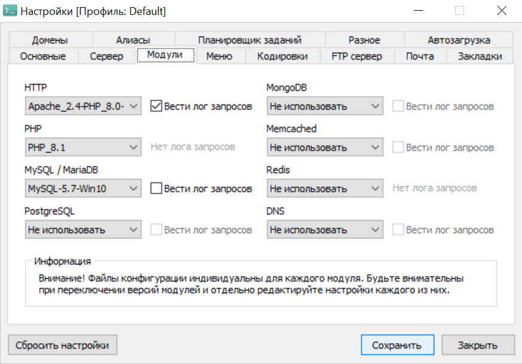

Начало работы с WordPress
Инструкция как начать работу с CMS системой Wordpress. В этой статье расскажем создать стартовый шаблон.
Инструкция как начать работу с CMS системой Wordpress. В этой статье расскажем создать стартовый шаблон.
WordPress (WP) ― это система управления содержимым сайта (CMS) с открытым исходным кодом.
Самым популярным на данный момент способом создания сайта является именно CMS. CMS (Content Management System) ― это система создания и управления сайтом. Простыми словами, это программа с удобным интерфейсом для создания веб-ресурса. В ней можно использовать код, но это необязательно. Благодаря такой технологии все желающие могут создать себе страничку.
Что нужно знать, чтобы работать с этой CMS? Программа не требует знания кода. Достаточно только зайти в админку и немного познакомиться с интерфейсом.
Опытным разработчикам WP даёт возможность использовать PHP. Так как эта CMS с открытым исходным кодом, интерфейс можно модернизировать и сделать для себя ещё удобнее.
Как и любая программа она имеет плюсы и минусы.
Вначале нам необходимо скачать локальный сервер на котором сможем вести разработку наших будущих сайтов. Одним из популярных вариантов является OpenServer.
После загрузки требуется выполнить начальную настройку сервера. У меня на данный момент стоит следующая конфигурация:
Повторитель в плагине ACF является мощным инструментом для работы с CMS WordPress
Для вывода записей полей типа "Повторитель" требуется использовать следующий код PHP"
Мною уже разработан стартовый шаблон страницы WoprdPess. Вы можете скачать файл и использвовать его в своих проектах